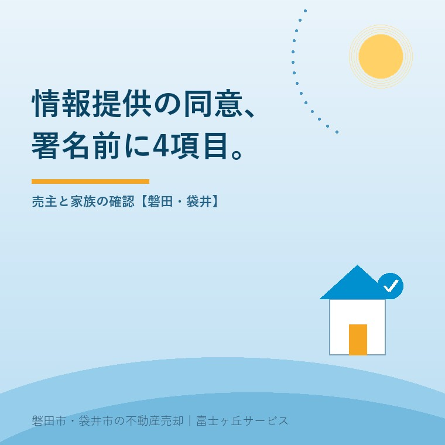
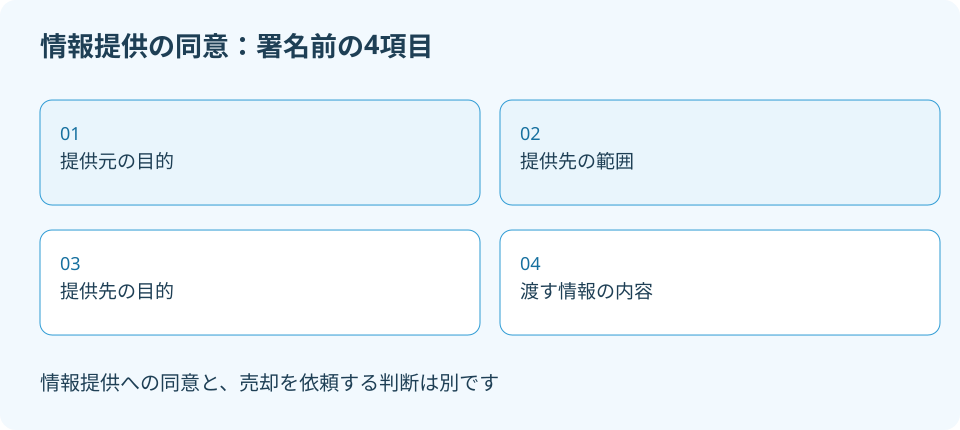

空き家の情報提供同意書、署名前の4項目
2026年9月28日｜カテゴリ：空き家・施設入居

この記事の要点
市から来た同意書、署名したら家を売ることになるの？
情報提供への同意と売却依頼は分けて判断します。署名前に、提供元の目的、提供先の範囲、提供先の目的、渡す情報の4項目を確認してください。磐田市・袋井市では、介護施設の運営から不動産事業を始めた富士ヶ丘サービスのような会社に、売却を決める前に相談する選択肢もあります。
大石浩之（磐田市／不動産業）です。施設入居で空いた実家について、市から情報提供の同意書が届いた。相談先が見つかるのは助かるけれど、名前を書いたら売却まで進むのか。そんな段階のご家族に、宅地建物取引士として先に読んでほしいのは、署名欄より上の説明です。
国土交通省は「空き家所有者情報の外部提供に関するガイドライン」を掲載しています。関連情報ページの最終改正表示は2026年9月3日、資料の表紙は令和8年9月です。2026年9月28日に本文17〜18頁を確認しました。以下の同意事項が9月に新設された、という説明ではありません。
同意書で確かめる4項目
空き家の情報提供への同意では、提供元の利用目的、提供先、提供先の利用目的、提供する情報の内容を確認します。国土交通省のガイドラインは、この4項目を明示して同意を得る扱いを説明しています。自治体が持つ情報を、外部の誰が何のために使うのかを読む部分です。
| 読む項目 | 署名前に聞く質問 |
|---|---|
| 提供元の利用目的 | 市は何を支援するために情報を渡すのか |
| 情報の提供先 | どの会社・団体・相談員が受け取る可能性があるか |
| 提供先の利用目的 | 相談、管理、売却など、何の業務に使うのか |
| 提供する情報の内容 | 氏名・連絡先・所在地のほか、相談内容まで含むか |
提供先は、必ず一社ずつ会社名を書く形とは限りません。国土交通省は、団体の支部や所属事業者など、対象者の範囲が明確な記載を求めています。会社名がないから直ちに問題だと決めるより、「この欄に含まれる相手は誰ですか」と確認する方が実用的です。
私は、情報提供の良い点は、ご家族が相談先を一から探す負担を減らせることだと考えます。実家の場所や相談したい内容が先に届けば、対応できる相手へ話をつなぎやすくなります。施設の予定と家の管理を同時に抱える家族には、相談の入口が一つできる意味があります。
その上で注文したいのは、「空き家の相談のため」という説明だけで、渡す情報をひとまとめにしないことです。自宅の電話番号と実家の所在地では意味が違います。家族の意向まで渡るなら、その内容が本人の希望どおりか、提出する前に読める形にしてほしいと私は考えます。

共有者と家族の連絡先を一緒にしない
空き家が共有の場合、国土交通省のガイドラインは共有者全員からの同意取得を原則としています。一部の共有者だけが同意した場合、その人の氏名・連絡先は提供可能ですが、同意していない共有者の情報は提供不可と説明しています。
仮に兄弟2人の共有で、一人が相談窓口へ行く場面を考えます。窓口へ行く人と、情報の本人は同じとは限りません。「家族の代表だから」と、もう一人の電話番号まで同じ欄へ書き込む前に確認します。これは実際の相談事例ではなく、同意する人を区別するための例です。
親が所有者で、子が連絡役を務める場合も、所有者欄と家族の連絡先欄を分けます。施設入居をしたという事情だけで、子が親の代わりにすべて決められるとは扱いません。本人から同意を得ることが難しいときは、代理の権限や手続について窓口と専門家へ確認します。
私は、連絡が取りやすい人を一人決めること自体には賛成です。ただ、その便利さで本人ごとの同意を飛ばしてはいけません。連絡役の名前の横に「所有者」「共有者」「家族の連絡担当」のどれかを書くだけでも、情報を受け取った業者が勝手に立場を読み替える余地を減らせます。
相談への同意と売却依頼を分ける
情報を外部へ渡すことへの同意と、不動産会社に売却を依頼する判断は別です。同意書を読んだだけで、売出価格や仲介手数料、媒介契約の種類まで決まったことにはしません。書面に別の申込みが含まれる場合は、その部分の説明も受けます。
相談に乗ることと、売ると決めさせることを一緒にしない。私はこう考えます。不動産屋にとって連絡先を受け取ることは仕事の入口ですが、売主にとってはまだ判断材料を集める段階かもしれません。そこを飛ばして売却の話を進めると、家族の信頼を失います。
例えば「当面は管理方法を知りたい」「施設費の見通しが立ってから売却を考える」という希望も、相談内容として記録できます。相談の目的が管理なのに、売出価格だけを提示されても必要な答えになりません。私は、売るかどうかが未定なら、そのまま未定と書いて伝えることを勧めます。
実際に売却依頼へ進むときは、依頼範囲と契約条件を別に確認します。専任媒介と一般媒介の違いは、その段階の判断材料です。空き家バンクについても、磐田市の空き家バンク登録を考える記事と分けて読み、情報提供への同意だけで登録まで済んだと考えないでください。
提供後の連絡方法まで質問する
同意書を出す前には、提供される情報だけでなく、提供後の問い合わせ先も確認します。国土交通省は、後日のトラブル防止のため、書面等の記録に残る方法で同意を得ることが望ましいと説明しています。署名した内容を後から確かめられる状態を残します。
私なら、控えに提出日を書き、問い合わせ先と回答を一緒に保存します。「どこから電話が来るか」「いつごろ連絡が来るか」「連絡方法の希望を伝えられるか」を質問します。これは全国一律に決まった運用の説明ではなく、ご家族の都合を確認するための私の提案です。
提供後に希望が変わった場合の連絡先も聞いておきます。撤回の扱いや、既に渡った情報の処理を、どの自治体でも同じとは断定できません。「やめたいときは誰に伝え、どの範囲まで対応できるか」と具体的に尋ねます。返答がない欄を、安心できそうな推測で埋めないことです。
私は、同意する方がよいかどうかを、封筒が届いたという事実だけでは決められません。相談先がなく困っている家族には助けになります。一方、既に相談中の会社があり、連絡窓口を増やしたくない家族もいるはずです。提供範囲を理解してから、利用するか判断できることが必要です。
磐田・袋井では手元の同意書を確認する
磐田市・袋井市の実家については、国のガイドラインと、実際に届いた自治体の書面を照合します。2026年9月28日時点で、本記事では両市の個別運用の開始や同意書の様式までは確認していません。全国の資料が改訂されたことを、そのまま地元での受付開始とは書けません。
まず手元の同意書で4項目に線を引き、読めない部分を窓口へ質問してください。磐田市の空き家相談で準備することと合わせ、所在地、所有者、家族の希望を整理します。相談を希望する理由は、一文で十分です。売却の意思を先回りして書く必要はありません。
富士ヶ丘サービスでは、介護と不動産を一体で相談できる窓口を設けています。磐田・袋井の実家について、施設入居後の管理と将来の売却を分けて考えることが、家族が困らない売却につながります。私は、相談の段階で何を決め、何をまだ決めないかを明確にして案内します。
- 提供元・提供先それぞれの目的と、渡す情報を読む。
- 共有者と連絡担当者を分け、本人ごとの同意を確認する。
- 控えを残し、売却依頼は別の判断として扱う。
よくある質問
情報提供への同意は、提供範囲と本人の意向を確認して判断します。
- 同意したら、その業者へ売却を頼まなければなりませんか？
- 情報提供への同意と、売却を依頼する媒介契約は別の判断です。ただし、書面に複数の申込みが含まれていないかは確認が必要です。提供目的と依頼業務を読み、相談だけを希望するなら、その意向を記録して伝えてください。同意書の控えを保管し、売却依頼の条件は業者から別途説明を受けます。
- 共有者の一人だけが同意したら、全員の連絡先が渡りますか？
- 国土交通省のガイドラインは、共有者全員からの同意取得を原則としています。一部だけが同意した場合、その人の氏名・連絡先は提供可能ですが、同意のない共有者の情報は提供不可と説明しています。家族の代表者が署名すれば全員分を渡せる、と考えず、名義と本人ごとの同意を窓口で確認してください。
- 提供先に会社名が一社ずつ書いていないと問題ですか？
- 国土交通省は、必ずしも個別の会社名である必要はないとしています。ただし、対象となる事業者や相談員の範囲が明確な記載を求めています。「関係業者」だけで範囲が分からない場合は、どの団体の誰が対象かを質問してください。個社名がないことだけで判断せず、実際に渡り得る相手を確認します。

この記事を書いた人：大石浩之（磐田市／不動産業・宅地建物取引士）
富士ヶ丘サービス株式会社。介護施設の運営から不動産事業を始め、磐田市・袋井市・森町で、介護と相続、実家の売却を一体で相談できる窓口を設けています。家族が困らない売却のため、資料と現地の条件を一件ずつ整理します。著者プロフィール
本記事は2026年9月28日時点の公開情報と筆者の意見です。制度・数値・手続きは変更されることがあります。個別の税務・登記・相続・代理の判断は、税理士・司法書士・弁護士などの専門家に確認を。